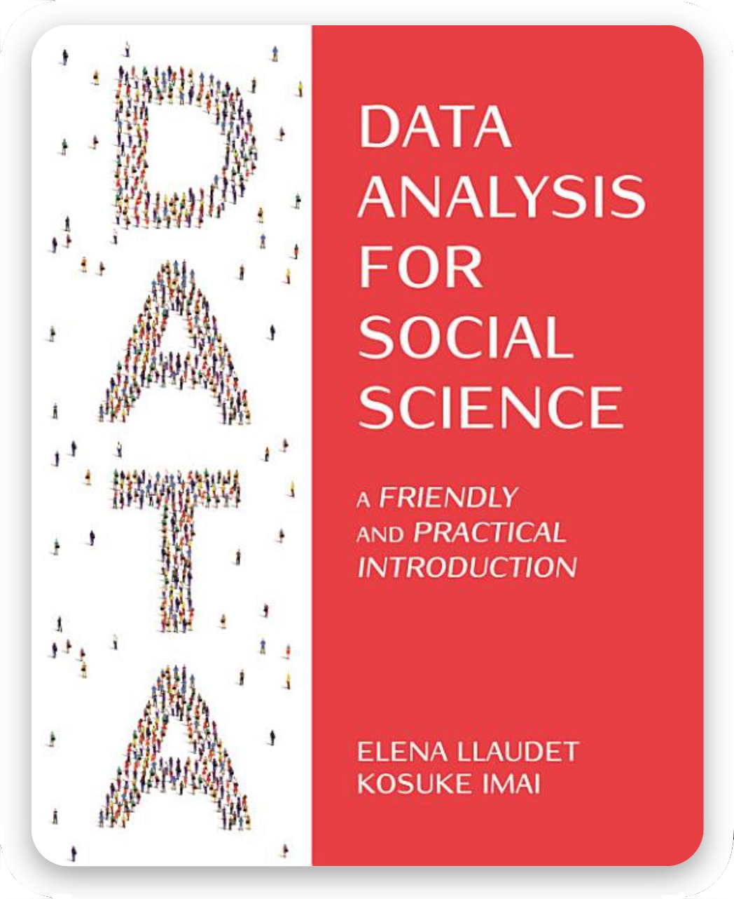

DATA ANALYSIS FOR SOCIAL SCIENCE
A FRIENDLY AND PRACTICAL INTRODUCTION
Elena Llaudet and Kosuke Imai
An ideal textbook for complete beginners — teaches from scratch R, statistics, and the fundamentals of quantitative social science.
Look Inside | Purchase from Amazon | Provide Feedback | Request Exam Copy | Preview Instructor Resources | Request Instructor Resources
Instructors: If you are using our book as the main textbook in your course, you can request instructor resources, including a sample syllabus, lecture slides, additional replication-style exercises, and interactive graphs.
[Rest of the content remains the same, just moved inside main-content div]